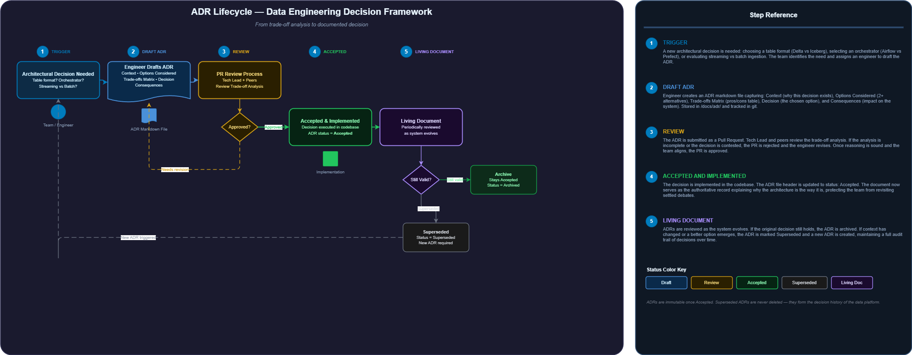

ADRs in Data Engineering: How to Document Trade-offs Before They Cost You
The two-week evaluation I shouldn't have had to run twice
We were six months into a new data platform build. The team had moved fast — Glue for ETL, Athena for ad-hoc queries, raw Parquet on S3. Then a new engineer joined and started asking the obvious question: "Why Parquet? Why not Iceberg?"
Good question, honestly. The problem wasn't the question — it was that nobody could answer it. The engineer who made the original call had left the company four months earlier. There was a Jira ticket from 2021 titled "Evaluate table formats" with a thread that ended in "+1 for Parquet, let's ship." That was it. No benchmark, no rejected alternatives, no written rationale.
So we ran the evaluation again. Two weeks. Senior engineer time. Same conclusion: stay on Parquet for now, Iceberg wasn't GA in Athena yet when the original choice was made, and at our current data volume the operational overhead wasn't justified. We wrote that up as a two-page doc in Confluence, and — I'll be honest — we didn't link it to anything. Six months later I found myself in a meeting where someone was proposing we evaluate Iceberg again.
This is the problem ADRs solve. Not the technical evaluation — you still have to do that. But the part where you lose the context, repeat the work, and have no way to say "we already had this conversation, here's what we decided and why, here's what would have to change for us to revisit it."
What an ADR actually is
Michael Nygard published "Documenting Architecture Decisions" in November 2011. The core idea is almost embarrassingly simple: write down the decision, the context that forced it, and the consequences you're accepting. Five fields. Immutable once accepted — you don't edit ADRs, you supersede them. That immutability is what makes the history auditable.
Nygard's original template:
# ADR-007: Use Apache Iceberg as the Default Table Format for Bronze and Silver Zones
## Status
Accepted
## Context
The situation or forces causing this decision to be necessary.
## Decision
We will use Apache Iceberg with AWS Glue Data Catalog for all Bronze and Silver zone tables.
## Consequences
What becomes easier or harder after this decision.
Both positive and negative — do not sugarcoat.The community extended this with MADR (Markdown Architectural Decision Records), which adds Decision Drivers, Considered Options, and a Pros/Cons per option section. That's the format I actually use in production — the extra fields are what make an ADR genuinely useful vs. a post-hoc justification document.
ADRs are immutable once accepted. You don't edit them — you create a new ADR that supersedes the old one. The old ADR's status field is updated to "Superseded by ADR-019." This is what gives you a full audit trail: you can trace a decision chain from 2021 to today and see exactly what changed and why.
Architecture: the ADR lifecycle
// ADR Lifecycle — Data Engineering Decision Framework

INTERACTIVE DIAGRAM — zoom & pan
The key loops in this diagram are what make the ADR lifecycle useful in practice. The revision loop at Step 3 means the trade-off analysis gets challenged before the decision is locked — not after. The supersession loop at Step 5 means the system's decision history is a chain, not a graveyard of outdated docs.
Why data engineering needs ADRs more than most disciplines
In most software systems, a bad architectural decision is annoying but recoverable. You picked the wrong ORM — you refactor over a few sprints. In data engineering, the choices compound. The format you pick today determines your compaction strategy in three years. The orchestrator you pick today determines whether you can use dbt Cloud in two years. The warehouse tier you pick today shows up on the finance team's AWS bill every single month.
These aren't two-way doors. Most of the core infrastructure decisions in a data platform are one-way, or close to it — and one-way doors are exactly where you need the most written context, not the least.
A team migrated from self-hosted Airflow to MWAA. No ADR on the original Airflow choice. Three weeks into the MWAA migration, they discovered their DAGs used a custom PythonVirtualenvOperator that pulled packages from a private CodeArtifact endpoint — unreachable inside MWAA without a VPC endpoint configuration. Rollback cost 2 days. The original self-hosted Airflow choice had a specific rationale around that CodeArtifact dependency — nobody wrote it down, and the engineer who set it up had moved to another team.
The four trade-off axes I document in every ADR
Axis 1: Latency vs. Cost
The clearest example in AWS data engineering is Kinesis Data Streams — standard consumers vs. Enhanced Fan-Out. Standard polling gives you shared 2 MB/s per shard across all consumers, propagation latency of 200ms to 1 second, no additional charge beyond the shard-hour. Enhanced Fan-Out (EFO) gives you dedicated 2 MB/s per registered consumer per shard, ~70ms p99 latency (AWS's documented number), at $0.015 per consumer-shard-hour plus $0.013 per GB retrieved.
For a 10-shard stream with 3 EFO consumers, that's roughly $108/month extra before data charges. If your SLA is "5-minute freshness," that's an expensive solution to a problem you don't have. If your SLA is "fraud detection under 100ms," EFO isn't optional — it's the only credible path. That's not an obvious call. Write it down.
Axis 2: Operational Complexity vs. Vendor Lock-in
Self-hosted Airflow vs. MWAA is the canonical data engineering example of this axis. Self-hosted gives you full control: any Python version, any PyPI package, GPU operators, custom executors, your own upgrade schedule. MWAA takes the operational burden away — AWS manages HA, scaling, and Airflow version upgrades — but you're on AWS's release cadence, constrained to the Python version bundled in each MWAA release (MWAA 2.8.1 ships with Python 3.11; MWAA 2.6.3 ships with Python 3.10, and you cannot mix), and you can't write to the filesystem outside /tmp.
MWAA pricing: mw1.small is ~$0.49/hr (~$358/month), mw1.medium ~$0.99/hr (~$723/month), mw1.large ~$1.99/hr (~$1,454/month). That's before worker and scheduler instances. Document the decision at the constraint level, not just the pricing level — the pricing changes, the constraints often don't.
Axis 3: Consistency vs. Availability
This one bites in subtle ways. DynamoDB eventually consistent reads cost 50% of the RCUs that strongly consistent reads cost — and for most use cases (a visitor counter, an analytics aggregation table, a reference data lookup) eventual consistency is completely fine. But if you're using DynamoDB for a financial ledger debit check, eventually consistent reads are a data integrity risk.
The same principle applies to older S3 patterns. Pre-December 2020, S3 LIST operations were eventually consistent. Teams built workarounds — DynamoDB manifests, custom _SUCCESS markers, sleep-before-list in Glue jobs. S3 has been strongly consistent since December 2020. Any ADR written before that date that references those workarounds should be marked Superseded. If it isn't, the workarounds stay as cargo-cult code, baffling every engineer who touches them.
Axis 4: Schema Flexibility vs. Query Performance
| Dimension | Raw Parquet on S3 | Apache Iceberg |
|---|---|---|
| Schema evolution | Add nullable columns only; type changes require full rewrite | ACID evolution: add, drop, rename, reorder, widen — metadata-only |
| Time travel | Not supported natively | Snapshot-based; AS OF TIMESTAMP in Athena v3 |
| Partition evolution | Re-partitioning requires full data rewrite | Hidden partitioning; partition spec change is metadata-only |
| Concurrent writes | No isolation; parallel jobs corrupt data without external locking | Optimistic concurrency via atomic manifest commits; MERGE INTO supported |
| Metadata overhead | Zero | Snapshot + manifest files; compaction required at scale |
| Operational burden | Near zero | Compaction scheduling, manifest management, catalog configuration |
| Athena support | Native, universal | Native in Athena v3 (GA November 2023) |
Raw Parquet is zero operational overhead and universally readable. Iceberg costs you catalog management, engine configuration, and compaction scheduling — in exchange for ACID semantics, schema evolution without rewrites, and time travel. Those features matter enormously in regulated contexts where GDPR delete support isn't optional, and in ML serving where reproducibility is a hard requirement, not a nice-to-have.
A real ADR: choosing Iceberg for Bronze and Silver zones
This is what an ADR looks like when it's actually useful — not a post-hoc justification, but a document that captures why the decision was made and what would have to change for it to be revisited.
---
status: accepted
date: 2024-03-15
decision-makers: Daniel Cruz Rodrigues (Lead Data Engineer),
Ana Lima (Data Architect), Carlos Mendes (Platform SRE)
consulted: Rafael Santos (ML Engineer, primary Silver zone consumer)
informed: VP Engineering, BI Team Lead
---
# ADR-007: Use Apache Iceberg for Bronze and Silver Zones
## Context and Problem Statement
Our data lake stores Bronze and Silver zone data as raw Parquet partitioned
by ingestion_date. Over 6 months we had three production incidents:
1. Concurrent write corruption (Q4 2023): Two Glue jobs writing to the same
Silver table simultaneously produced overlapping manifests — 14 hours of
data duplication before detection.
2. Schema drift break (Jan 2024): Upstream added a non-nullable column;
Athena queries on Silver failed for 6 hours.
3. GDPR delete requests (Feb 2024): Three right-to-erasure requests required
full partition rewrites — 280 GB of Parquet rewritten per request.
We need a table format that provides ACID guarantees, schema evolution,
and row-level deletes without full partition rewrites.
## Decision Drivers
* Row-level deletes (GDPR compliance, SLA: 72 hours from request to execution)
* Native AWS Glue Data Catalog integration (migration not in scope)
* Queryable from Athena v3, Glue 4.0, and EMR 6.x
* Schema evolution without full data rewrite
* Time travel for ML reproducibility
* Team has zero prior Iceberg experience — operational complexity must be manageable
## Considered Options
* Option A: Apache Iceberg with Glue Catalog REST integration
* Option B: Apache Hudi with Glue Catalog support
* Option C: Delta Lake on EMR
* Option D: Continue raw Parquet + DynamoDB-backed locking
## Decision Outcome
Chosen option: Option A — Apache Iceberg.
Iceberg is the only format with native GA support in both Athena v3 (DDL + DML)
and Glue Catalog as of Q1 2024. Delta Lake has no native Athena support without
third-party connectors. Hudi's Athena v3 write support was still in preview at
decision date.
### Consequences
* Good: MERGE INTO for GDPR deletes reduces compliance execution from ~4 hours
(full partition rewrite) to ~8 minutes (position delete file + async compaction).
* Good: ACID commit protocol eliminates the concurrent-write corruption class of incidents.
* Good: Schema evolution is metadata-only for add/widen operations.
* Bad: Compaction runbook must be created before GA (rewrite_data_files on schedule).
* Bad: Existing raw Parquet tables require migration scripts (estimated: 3 engineer-days).
* Risk: If Glue Catalog Iceberg support changes API, fallback is direct Spark catalog —
architecturally feasible, 2-3 sprint migration.
## Re-evaluate when
* Glue Catalog Iceberg support becomes a paid add-on
* Primary query engine migrates away from Athena
* Upsert write pattern exceeds 30% of total writes (re-evaluate Hudi)This is the most underused part of any ADR. Without explicit re-evaluation triggers, a decision either lives forever regardless of changed context, or gets re-evaluated on political whims. Write the conditions that would make the decision wrong, and let those conditions — not the calendar — trigger the next review.
ADR status lifecycle: Proposed → Accepted → Superseded
Four statuses cover everything you need:
- Proposed — drafted, under review, not yet in effect
- Accepted — team agreed; this is the governing decision
- Deprecated — was valid, context no longer applies; no replacement
- Superseded — replaced by a newer ADR; link to the superseding one required
A realistic supersession chain from a data platform that has been evolving for four years:
ADR-003: Use AWS Glue ETL for all Bronze-to-Silver transforms
Status: Superseded by ADR-011 (2023-06-01)
Original date: 2021-04-10
Rationale: No Spark expertise on team; Glue's no-cluster model reduces ops burden.
ADR-011: Replace Glue ETL with EMR Serverless for Silver-zone transforms
Status: Superseded by ADR-019 (2025-01-15)
Original date: 2023-06-01
Rationale: Glue DPU pricing ($0.44/DPU-hr) exceeded EMR Serverless at our scale
(>500 DPU-hours/month). Team now has Spark expertise.
ADR-019: Migrate Silver-zone transforms to Spark on EMR with REST catalog
Status: Accepted
Date: 2025-01-15
Rationale: Iceberg REST catalog standard enables multi-engine portability.That's the decision audit trail that lets a new engineer in 2026 understand not just where you are, but how you got there and why you made each turn. No Jira tickets, no tribal knowledge, no "I think someone decided that in 2021."
Tooling: what actually works in practice
adr-tools CLI (the simplest option)
Install with brew install adr-tools. The commands you'll actually use:
# Initialize ADR directory in your repo
adr init doc/adr
# Create a new ADR (auto-increments the number)
adr new "Use Apache Iceberg for Bronze and Silver zones"
# Create a new ADR that supersedes ADR 11
# This automatically updates ADR-011's status field
adr new -s 11 "Migrate Silver-zone transforms to EMR with REST catalog"
# Generate a table of contents (paste into README)
adr generate toc
# Generate a Graphviz graph of supersession relationships
adr generate graph | dot -Tsvg > decisions.svgGitHub PRs as the review mechanism
This is the most pragmatic approach for most teams. Every new ADR is submitted as a PR. Reviewers comment inline on the trade-off analysis. Merge = Accepted. The PR review thread becomes the decision discussion record — timestamped, tied to reviewers, permanently linked to the commit. You get all the structure of a formal review without any tooling overhead.
The pattern: store ADRs at docs/adr/0007-iceberg-table-format.md, set branch protection requiring at least one tech lead approval before merge, and add "does this supersede an existing ADR?" as a PR checklist item.
Log4brains (if you want a browsable portal)
npm install -g log4brains && log4brains init — parses your MADR-format files and generates a searchable static HTML site. Deployable to GitHub Pages or S3 + CloudFront. Useful when you have 30+ ADRs and non-engineers need to browse them without touching the repo.
The anti-patterns that make ADRs useless
1. Decisions buried in Jira tickets
A Jira comment that says "+1 for Iceberg, let's do it" is not an ADR. Jira tickets get closed, archived, and become effectively inaccessible within 18 months. The decision context, the rejected alternatives, the specific forces that shaped the choice — all of it disappears. Symptom: team members say "I don't know why we use X" more than twice per quarter.
2. ADRs written after-the-fact to justify
Writing an ADR three months after implementation to satisfy a compliance audit. The forces are reconstructed from memory, rejected alternatives are omitted or strawmanned, and the consequences section is suspiciously positive. These ADRs fail their core purpose — they document the decision without capturing the deliberation. You can usually detect them by checking: is the ADR date months after the first commit that implements the decision?
3. Never updating status when superseded
ADR-003 says "Status: Accepted" but has been de facto replaced by ADR-011. A new engineer reads ADR-003, follows its guidance, and spends a week wondering why their Glue jobs conflict with the EMR pipelines everyone else is running. This is worse than having no ADR — it actively misleads. The adr new -s N command handles this automatically; without tooling, add it to your PR checklist.
4. No "Re-evaluate when" trigger
An ADR without explicit re-evaluation conditions lives forever, regardless of how much the context changes. Every ADR for a cost-sensitive decision should have numeric triggers: "Re-evaluate Redshift Provisioned vs. Serverless when average cluster utilization drops below 30%, or when ad-hoc queries exceed 40% of total query-hours." Without those, you're either never revisiting it or revisiting it every time a new VP asks the question.
One team evaluated "Redshift Provisioned vs. Serverless" in Q1 2022 — no ADR written, same conclusion reached, nothing documented. The same evaluation ran again in Q3 2023 after a new data architect joined. Same conclusion. Same evaluation ran again in Q1 2025 when a new VP asked the question. Three evaluations, ~3 weeks of senior engineer time, zero new information produced. One ADR with a re-evaluation trigger clause would have prevented the second and third runs entirely.
Where to start
Don't try to backfill ADRs for every decision that was ever made. Pick the three most consequential decisions that are currently "why do we do it this way?" mysteries on your team, and write an ADR for each — even retroactively. Retroactive ADRs are better than none, as long as you're honest that you're reconstructing context rather than recording it in real time.
Then add "does this require an ADR?" as a standing question in your tech design process. The answer is yes any time the decision is: hard to reverse, affects multiple teams or systems, involves meaningful cost or performance trade-offs, or has a non-obvious rationale that a new team member would question within their first month.
The Iceberg-vs-Parquet question I described at the start? We ran that evaluation twice because we didn't write it down the first time. We ran it a third time — on paper — to write the ADR. The total cost of three evaluations was probably 5-6 engineer-weeks across the team. One good ADR and a re-evaluation trigger clause would have made that 1.5 weeks. The ADR pays for itself before the ink dries.